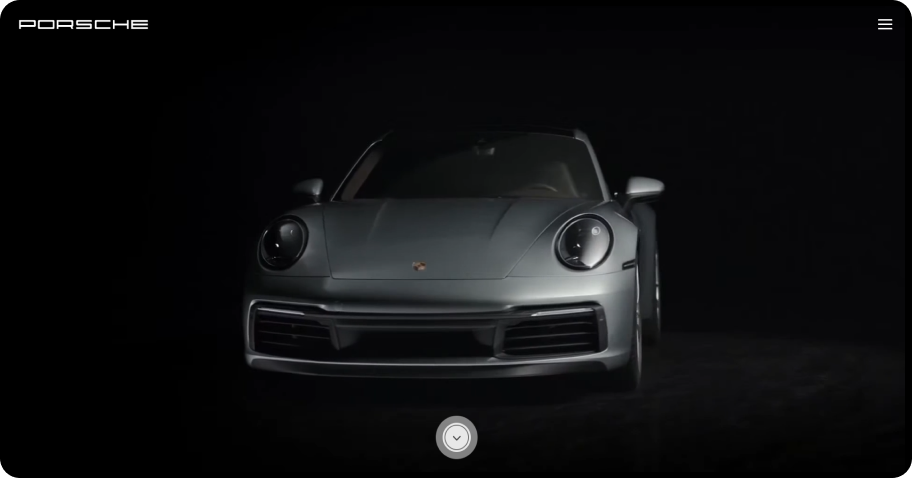

PROJECT4
Porsche
- Project 포르쉐 홈페이지 리디자인, 퍼블리싱
- Skill Html5, Css3, Javascript
- period 2023. 07 .25 ~ 2023. 08. 02

프리텐다드123 Manrope
프리텐다드123 Manrope
프리텐다드123 Manrope
#000000
#FFFFFF
#D5001C
처음에는 문장을 적어두고 해당 알파벳에 position:relative; 를 주고
나머지 알파벳 2개를 position:absolute;로 겹친 후 애니메이션을
진행하려고
했으나, 공간 부족으로 인하여 애니메이션이 구현이 안 됐다.
그래서 큰 section 안에 position:relative;를 적용하고 각 단어마다
position 값을
부여해 위치를 지정해 주니 공간이 생겨 알파벳이 3겹으로
펼쳐지는 애니메이션을 구현할 수 있었다.
이미지가 커지면서 가로 스크롤이 생기는 문제는, 내가 알고 있던 지식 선에선
overflow:hidden 밖에 떠오르지 않았는데 적용이 안됐다.
다른 쪽으로 접근을 해야 하는 건가 오랜 시간 고민했었는데, 알고 보니
overflow:hidden을
적용시킨 영역을 잘못 선택한 거였다.
맞는 영역인 .section2 안에 overflow:hidden을 적용시켜주니 넘치는
부분이 스크롤 없이 꽉 차게 보이게 되었다.
스크롤을 하면 이미지가 확대되며 나타나는 부분이 있는데, 너무 빨리 스크롤이
되다 보니 먼저 나오는 글씨를 읽을 틈도 없이 사진이 커져 버리는 문제가 있었다.
opacity를 0으로 설정하여 요소를 숨긴 후, 스크롤 위치를 약간 더 위로 조정한
top: -50%으로 설정하여 스크롤이 일어났을 때 opacity가 1로 바뀌는 순간이
느려지도록 구현했다. 이렇게 스크롤 시 이미지가 너무 빨리 변하는 문제를 해결하여
자연스러운
확대 애니메이션이 가능하게 했다.